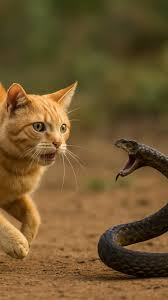

Felis catus ou gato doméstico é um mamífero carnívoro da família dos felídeos, muito popular como animal de estimação.
Ocupando o topo da cadeia alimentar, é predador natural de diversos animais, como roedores, pássaros, lagartixas e alguns insetos.
Segundo pesquisas realizadas por instituições norte-americanas, os gatos consistem no segundo animal de estimação mais popular do mundo,
estando numericamente atrás apenas dos peixes de aquário.Consta em trigésimo nono na lista das 100 espécies exóticas invasoras mais daninhas
do mundo da União Internacional para a Conservação da Natureza.

Olha essa fofura!!
Qual é a função dos bigodes dos gatos? Os bigodes dos gatos são ESSENCIAIS para o equilibro de um Gato?
, Os pelos são profundamente enraizados e repletos de terminações nervosas extremamente sensíveis. Suas principais utilidades incluem:
- Medição de espaço: O comprimento dos bigodes geralmente equivale à largura do corpo do felino, ajudando-os a saber se passam por buracos ou frestas sem ficarem presos.
- Equilíbrio e navegação: Eles ajudam os gatos a se movimentarem com agilidade no escuro e a caírem sempre de pé.
- Detecção de perigo e presas: Os bigodes conseguem sentir a menor alteração ou vibração nas correntes de ar e na temperatura, compensando a visão de perto dos felinos.
- Comunicação: O movimento dos bigodes reflete o estado de espírito do pet. Por exemplo, bigodes muito esticados para frente indicam curiosidade ou animação, enquanto fios colados ao rosto demonstram medo ou desconforto.

Agora uma pergunta bem famosa e BEM interessante, Porque e como os gatos tem uma reação tão ágil?
Essa velocidade impressionante é possível graças a uma combinação de fatores biológicos e anatômicos:
- Conexão nervosa direta: O sistema nervoso felino transmite informações entre os olhos, o cérebro e os músculos de forma extremamente otimizada. O cérebro do gato processa informações visuais em alta velocidade, enviando comandos quase instantâneos.
- Visão e audição aguçadas: Os olhos dos gatos são altamente sensíveis a movimentos. Eles possuem uma visão periférica ampla e conseguem detectar o menor deslocamento no ambiente sem precisar mover a cabeça.
- Coluna e músculos flexíveis: A anatomia da coluna vertebral do gato é extremamente flexível, permitindo mudanças bruscas de direção, torções rápidas no ar e contrações musculares poderosas.

Olha essa fofura!!
Qual é a função dos bigodes dos gatos? Os bigodes dos gatos são ESSENCIAIS para o equilibro de um Gato?
, Os pelos são profundamente enraizados e repletos de terminações nervosas extremamente sensíveis. Suas principais utilidades incluem:
- Medição de espaço: O comprimento dos bigodes geralmente equivale à largura do corpo do felino, ajudando-os a saber se passam por buracos ou frestas sem ficarem presos.
- Equilíbrio e navegação: Eles ajudam os gatos a se movimentarem com agilidade no escuro e a caírem sempre de pé.
- Detecção de perigo e presas: Os bigodes conseguem sentir a menor alteração ou vibração nas correntes de ar e na temperatura, compensando a visão de perto dos felinos.
- Comunicação: O movimento dos bigodes reflete o estado de espírito do pet. Por exemplo, bigodes muito esticados para frente indicam curiosidade ou animação, enquanto fios colados ao rosto demonstram medo ou desconforto.
Agora uma pergunta bem famosa e BEM interessante, Porque e como os gatos tem uma reação tão ágil?
Essa velocidade impressionante é possível graças a uma combinação de fatores biológicos e anatômicos:
- Conexão nervosa direta: O sistema nervoso felino transmite informações entre os olhos, o cérebro e os músculos de forma extremamente otimizada. O cérebro do gato processa informações visuais em alta velocidade, enviando comandos quase instantâneos.
- Visão e audição aguçadas: Os olhos dos gatos são altamente sensíveis a movimentos. Eles possuem uma visão periférica ampla e conseguem detectar o menor deslocamento no ambiente sem precisar mover a cabeça.
- Coluna e músculos flexíveis: A anatomia da coluna vertebral do gato é extremamente flexível, permitindo mudanças bruscas de direção, torções rápidas no ar e contrações musculares poderosas.
